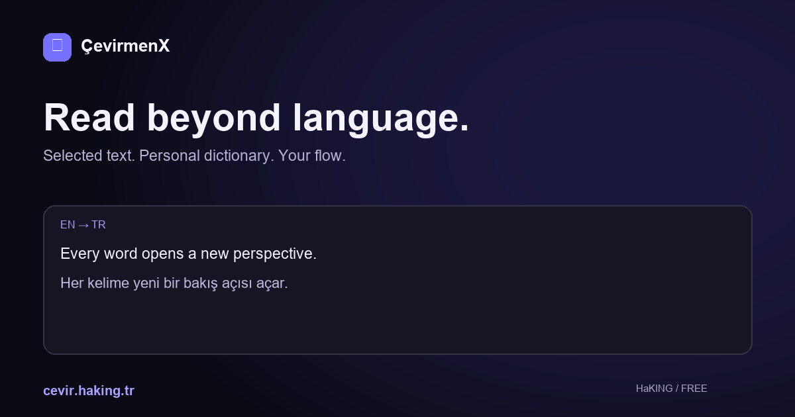

Your own dictionary
Define terms in your own words.
Translate selected text, use your own dictionary and revisit your history.
Free · No API key requiredSee it in actionEvery word opens a new perspective.
Every word opens a new perspective.
A familiar workflow, wherever you browse.
Define terms in your own words.
Search and export previous translations.
Reuse translations stored on this device.
ÇevirmenX · HaKING
